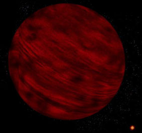

Who
said the Sun will shine tomorrow? Here's the bad news: one day, the Sun will
NOT shine anymore. Eventually, the Sun will die. It will be a beautiful
thing to see. But there's a bit of a problem: long before, the dying Sun will simply
have swallowed the earth.
Unfortunately,
the amount of fuel inside the Sun is limited. You can't see it, but in fact,
that huge light bulb in the sky we call `Sun' shrinks and cools down
a tiny little bit every second. The Sun is `middle aged'. In another 5,000
million years, it will run out of hydrogen.
Long
before, we will notice the consequences. On the one hand, the Sun will get
brighter and warmer. On the other hand, as the Sun shrinks and becomes less
heavy, its gravitational pull on the Earth will loosen. Consequently, the
orbit of our planet and all other planets in the solar system will widen.
Okay,
so an earthly year will be several weeks longer. But don't mistake, there's a
downside here. It will get colder. And not just a little bit. Within `only'
several billions of years, Earth will become an icy, permafrost planet, where
it will be hard to survive.
Well,
we're still lucky, really. When the Sun eventually runs out of hydrogen, the
nuclear reactions inside the Sun's core will stop. There will be no explosive
force pushing outwards from the heart of the Sun anymore. The Sun will
collapse, pressed together by its own gravity.
Subsequently,
temperatures inside the Sun will rise even more. And, lucky we, there will be
another nuclear reaction sparking off. The Sun will start fusing helium into
carbon and hydrogen this time. KABOOM! This will prevent the Sun from
collapsing any further. Finally, we will have warmth again.
But
wait, we're in trouble. A nuclear power plant that runs on helium gives off a
hell of a lot more energy and heat than one run on hydrogen. The new, immense
power of the Sun's core will literally blow up the Sun. The Sun will grow, eating up several
planets: first Mercury, then Venus. And next on the menu, yes, Earth.
The
absorbing 1961 movie The Day The Earth Caught Fire gives a pretty
good picture of what it will be like. Sure, it will become quite hot. Rivers
will evaporate, causing dense, hot fogs. The polar ice will melt, causing
oceans to rise and entire countries to flood. But then, the sea will evaporate
as well. Long before the solar surface reaches our planet, we will simply be
barbecued to death. Sadly, there is no happy ending. Eventually, Earth will be
swallowed by the growing Sun. Our planet will burn up in its ultra hot outer
layers.
Of course, we still have some 5,000 million years to come up with a solution for this nasty problem. For one thing, we might evacuate, or even find a way to move our entire planet away from the Sun. But even then, it's highly unlikely we will enjoy the Sun as much as we once did. Since the Sun has expanded so much, its outer parts will cool down. The Sun's surface will become cool, deep red. It will be a Red Giant -- `giant' being just the right name for an object that just ate up our planet.
| So there we are in our spaceship or wherever we are, glancing back at our red giant Sun. Will that be it? No, it won't. Even the helium-into-carbon reaction doesn't last forever. Eventually, after another 100 million years or so, the Sun runs out of helium as well. The nuclear reactions will stop again, and gravity will take over once more. The Sun's core will collapse further. |  |
But
this time, a dramatic change will occur. The Sun simply won't have
enough gravitational strength to hold itself together anymore. The Sun's outer
layers will be pushed off into space. In other words: the Sun will explode.
 |
There
will be a big nebula of super hot solar gas, flinging off in all directions.
A beautiful sight, but not for us poor things. For many millions of years in a
row, it will be like we're on the grill of a barbecue once more -- spaceship
or no spaceship. And there will be radiation. Lots of it.
Okay, so we decide to keep it cool and move our spaceship further away from the dying Sun. |
Still, even
that won't be it. After the solar gasses
and all the radiation have passed by, we will find that our vexed
Should
we move our spaceship back to the Sun to catch some warmth? Well, we'd better
not. For one thing, the gravity of our deceased Sun will be way too big to
cope with. White dwarfs are incredibly dense. Although our ex-Sun will only
have the size of the Earth, it will still have the mass of a star. A cubic
centimeter may weigh several tons. So, by the time we'd reach a distance where
it's warm and comfortable, our spaceship would simply crash into it.
And, oh well, what's the point in visiting White Dwarfs anyway? In the end -- more millions of years later -- the Sun will be cooled down so much, it will no longer give off any warmth at all. It will be a dull, extinguished object called a Black Dwarf.
Bye-bye, beautiful summer!

|
 |
LINKS OUT:
http://www.astronomytoday.com/astronomy/sun.html
http://www.space.com/scienceastronomy/solarsystem/death_of_earth_000224.html
PAPER SOURCES:
"The Sun". In: New Scientist, 21 June 2003
"Fiery Future for the Planet". In: New Scientist, 2 April 1994
"Hell on Earth". In: New Scientist, 6 December 2003